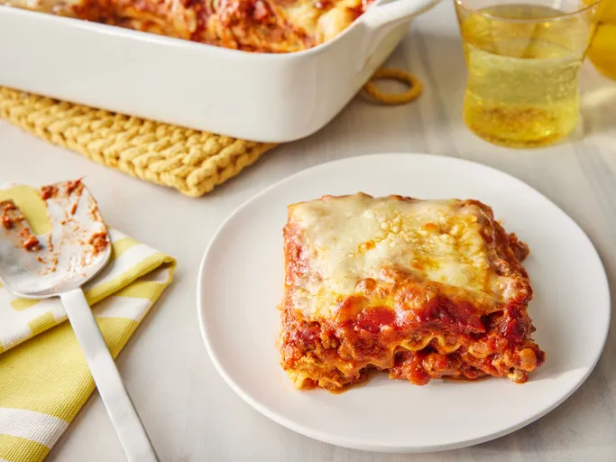

| Ingredient Needed | Amount Needed |
|---|---|
| sweet italian sausage | 1 pound |
| lean ground beef | ¾ pound |
| minced onion | ½ cup |
| garlic, crushed | 2 cloves |
| crushed tomatoes | 1 can (28 ounce) |
| canned tomato sauce | 2 cans (6.5 ounce) |
| tomato paste | 2 cans (6 ounce) |
| water | ½ cup |
| white sugar | 2 tablespoons |
| chopped fresh parsley, divided | 4 tablespoons |
| dried basil leaves | 1 ½ teaspoons |
| salt, divided, or to taste | 1 ½ teaspoons |
| Italian seasoning | 1 teaspoon |
| fennel seeds | ½ teaspoon |
| ground black pepper | ¼ teaspoon |
| lasagna noodles | 12 noodles |
| ricotta cheese | 16 ounces |
| large egg | 1 egg |
| mozzarella cheese, sliced | ¾ pound |
| grated parmesan cheese | ¾ cup |